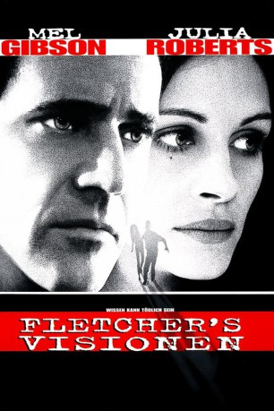

#4413 Fletchers Visionen
Alternativ: Conspiracy Theory
 
 IMDB-Wertung: 6.7 / 10
IMDB-Wertung: 6.7 / 10  Metascore: 0
Metascore: 0 
Wo immer er kann, verbreitet der New Yorker Taxifahrer Jerry Fletcher seine abstrusen Verschwörungstheorien. Doch eines Tages scheint er mit einer seiner schrulligen Visionen einen wunden Punkt des amerikanischen Geheimdienstes getroffen zu haben. Jahrelang hat ihm keiner ein Wort geglaubt, jetzt ist alle Welt hinter ihm her. Jerry hat nur eine Chance: Die ganze Wahrheit muß ans Licht...
Jahr: 1997
Dauer: 135 Minuten
FSK: 12
Land: Studio: Warner Bros.Tonspuren:
Untertitel:
Auflösung: 720p (1280x536) Größe: 2969 MB
Genre: Action, Krimi, Mystery, Liebe, Thriller
Regisseur:  Richard Donner
Richard Donner
Drehbuch: Pierce Gardner
Soundtrack:
Darsteller:
Datei: X:\1997\Fletchers Visionen (1997, FSK12, 1280x536).mkv seit 14.09.2016
Festplatte: HD 1996-2002
 Es gibt insgesamt 83 Filme in der Gruppe '1997'
Es gibt insgesamt 83 Filme in der Gruppe '1997'